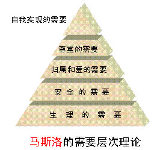

00:00
第七节 需要与动机
一、需要的定义
二、需要的分类
（一）根据需要的起源分：
①自然需要是指个体对维持其生存和种族延续所必需的条件的要求。
②社会需要是指个体对维持社会发展所必需的条件的要求。
（二）根据需要的对象分：
①物质的需要： 主要指个体对物质文化对象的欲求。
②精神性需要： 表现为对精神文化方面的欲求，对掌握社会意识产品的欲求和对美的享受的需求及对创造发明的欲望等等。
（三）根据先天后天分
①天然需要
1.内部稳定性需要：如饥、渴、呼吸、睡眠。
2.回避危急的需要：对有害的或不愉快的刺激回避、排除的需要
3.性的需要：是一种生理需要，也是社会需要
4.内发性需要：如好奇、接触和愉快
03:04
②后天需要
1.物质需要
2.精神需要（认识和美的享受）
3.社会需要（劳动、交往、社会活动等）
三、马斯洛的需要层次理论
马斯洛(Maslow AH,1908～1970)美国人本主义心理学家，曾提出需要的层次论(hierarchy of needs theory)。每个人都存在一定的内在价值。这种内在价值就是人的潜能或基本需要，人的需要应该得到满足，潜能应该得到释放。

14:40
动机与挫折
一、动机的概念
1.动机(motivation)是引起和维持个体的活动，并使活动朝着一定目标的内部心理动力。
2.三个功能: 激活、 指向 、维持和调整
二、动机的种类
1.根据内容分
①生理性的动机(物质方面的动机)
②心理性的动机(精神方面的动机
2.根据性质分 ：①正确的动机 ②错误的动机
3.根据作用分：①主导动机 ②辅助动机
4.根据维持时间分： ①短暂动机 ②长远动机
5.从引起原因分：①内部动机 ②外部动机
三、动机冲突
1.在同一时间内人们常常存在着两种或多种非常相似或相互矛盾的动机，这就是动机斗争，也称为动机冲突。
23:48
2.四种基本形式
①双趋冲突两个目标对个体具有相同的吸引力，引起同样强度的动机，无法同时实现，二者必择其一。
②双避冲突同时受到两种事物的威胁，产生同等强度的逃避动机，但迫于情势，必择其一，左右为难，进退维谷的紧张状态。
③趋避冲突对同一事物同时产生两种动机，即向往得到它，同时又想拒绝和避开它。
④双重趋避式冲突人们常常会遇到多个目标，每个目标对自己都有利也都有弊，反复权衡拿不定主意所产生的冲突。
四、挫折
动机受到干扰阻滞、被迫暂时放弃或完全受阻所导致的需要不能满足的情绪状态。
在实现目标中受到阻碍时，可产生以下几种情况：
1. 加倍努力，克服障碍，达到目标；
2.改变行为，绕过障碍，达到目标；
3.如果障碍难以逾越，寻求替代目标；
4.如果障碍难以逾越，又无法寻求替代目标，走投无路，不能实现目标。
只有第四种情况时才会产生挫折感。